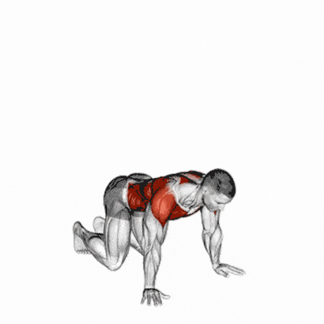
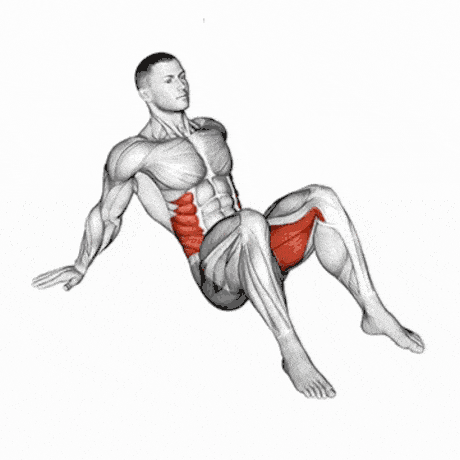
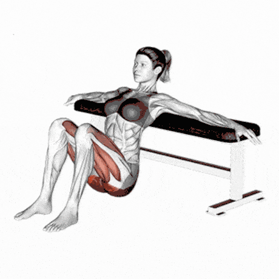
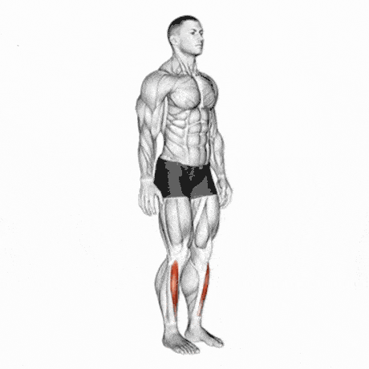
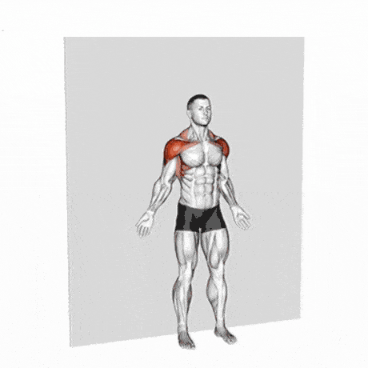

<title>Diez minutos al día · Guía de inicio | Mr. Wellness</title>
<meta name="description" content="Guía gratuita de Carlos Zamora: rutina de movilidad de diez minutos, tres ejercicios de respiración y un calendario de catorce días. Sin equipo.">
<link rel="canonical" href="https://mr-wellness.com/guia-inicio.html">
<meta property="og:type" content="website">
<meta property="og:url" content="https://mr-wellness.com/guia-inicio.html">
<meta property="og:title" content="Diez minutos al día · Guía de inicio">
<meta property="og:description" content="Ocho movimientos de movilidad, tres de respiración y un calendario de dos semanas. Gratis.">
<meta property="og:image" content="https://mr-wellness.com/assets/logo-es-640.png">
<meta property="og:locale" content="es_MX">
<link rel="icon" href="assets/favicon.svg" type="image/svg+xml">
<meta name="viewport" content="width=device-width, initial-scale=1">
<style>
:root{
  --paper:#FBFAF7; --surface:#FFFFFF; --sunk:#F3F0EA;
  --ink:#22262C; --ink-2:#464C55; --muted:#666D77;
  --line:#E2DDD4; --line-soft:#EFEBE4;
  --blue:#35708F; --blue-soft:#E4EEF3;
  --orange:#AE5A05; --orange-soft:#FAEEE1;
  --sage:#5E7519; --sage-soft:#EDF1DF;
  --serif:Georgia,'Iowan Old Style','Times New Roman',serif;
  --sans:-apple-system,BlinkMacSystemFont,'Segoe UI',Roboto,'Helvetica Neue',sans-serif;
  --mono:ui-monospace,'Cascadia Mono',Consolas,'Courier New',monospace;
  color-scheme:light;
}
@media (prefers-color-scheme:dark){
  :root:not([data-theme="light"]){
    --paper:#15181C; --surface:#1C2026; --sunk:#22272E;
    --ink:#EDEAE4; --ink-2:#C0BBB3; --muted:#928D85;
    --line:#333941; --line-soft:#282D34;
    --blue:#8CC0D9; --blue-soft:#1A2B34;
    --orange:#F0A45C; --orange-soft:#2E2214;
    --sage:#B7CE58; --sage-soft:#212814;
    color-scheme:dark;
  }
}
:root[data-theme="dark"]{
  --paper:#15181C; --surface:#1C2026; --sunk:#22272E;
  --ink:#EDEAE4; --ink-2:#C0BBB3; --muted:#928D85;
  --line:#333941; --line-soft:#282D34;
  --blue:#8CC0D9; --blue-soft:#1A2B34;
  --orange:#F0A45C; --orange-soft:#2E2214;
  --sage:#B7CE58; --sage-soft:#212814;
  color-scheme:dark;
}
*,*::before,*::after{box-sizing:border-box;}
body{
  margin:0; background:var(--paper); color:var(--ink-2);
  font-family:var(--sans); font-size:16px; line-height:1.65;
}
.page{max-width:720px; margin:0 auto; padding:0 24px;}
h1,h2,h3,h4{font-family:var(--serif); color:var(--ink); line-height:1.2; margin:0; text-wrap:balance;}
h1{font-size:clamp(2rem,1.4rem+2.4vw,2.8rem); letter-spacing:-.015em;}
h2{font-size:clamp(1.35rem,1.1rem+1vw,1.7rem);}
h3{font-size:1.08rem;}
p{margin:0;}
strong{color:var(--ink); font-weight:600;}
.kicker{font-family:var(--mono); font-size:.7rem; letter-spacing:.16em; text-transform:uppercase; color:var(--orange); display:block;}

.cover{border-bottom:3px solid var(--orange); padding-block:clamp(38px,7vw,64px) clamp(30px,5vw,44px); background:var(--surface);}
.cover h1{margin-top:1rem;}
.cover .sub{margin-top:1em; font-size:1.06rem; max-width:52ch;}
.cover .by{margin-top:1.6em; font-size:.9rem; color:var(--muted); font-family:var(--mono);}

section{padding-block:clamp(30px,5vw,46px); border-bottom:1px solid var(--line-soft);}
section > .page > * + *{margin-top:1.05em;}
h2 + p{margin-top:.85em;}

.rule{border:1px solid var(--line); border-left:4px solid var(--blue); background:var(--surface); border-radius:3px; padding:16px 18px;}
.rule + .rule{margin-top:10px;}
.rule strong{display:block; margin-bottom:.2em;}
.warn{border:1px solid var(--line); border-left:4px solid var(--orange); background:var(--orange-soft); border-radius:3px; padding:16px 18px; font-size:.95rem;}

.mv{border:1px solid var(--line); border-radius:4px; background:var(--surface); overflow:hidden; break-inside:avoid;}
.mv + .mv{margin-top:16px;}
.mv__head{display:flex; align-items:baseline; gap:.7em; padding:13px 18px; background:var(--sunk); border-bottom:1px solid var(--line);}
.mv__n{font-family:var(--mono); font-size:.78rem; color:var(--surface); background:var(--blue); border-radius:3px; padding:.25em .5em; flex:none;}
.mv__head h3{flex:1;}
.mv__dose{font-family:var(--mono); font-size:.8rem; color:var(--ink); white-space:nowrap;}
.mv__body{padding:16px 18px; display:grid; gap:.75em;}
.mv__body p{font-size:.96rem;}
.mv__label{font-family:var(--mono); font-size:.66rem; letter-spacing:.1em; text-transform:uppercase; color:var(--muted); display:block; margin-bottom:.15em;}
.mv__err{border-left:3px solid var(--orange); padding-left:12px;}
.slot{
  border:1.5px dashed var(--line); border-radius:3px; background:var(--sunk);
  padding:14px; text-align:center; font-family:var(--mono); font-size:.74rem; color:var(--muted);
}
  .mv__img{width:100%; max-width:340px; height:auto; margin:0 auto; display:block; border-radius:8px; background:var(--sunk);}
  .slot--soon{display:grid; gap:.35em; padding:22px 18px; text-align:center;}
  .slot--soon strong{color:var(--orange-deep); font-family:var(--sans); font-size:.82rem; letter-spacing:.1em; text-transform:uppercase;}
  .slot--soon span{font-family:var(--sans); font-size:.88rem; color:var(--muted); line-height:1.5; max-width:44ch; margin:0 auto; text-transform:none; letter-spacing:0;}

.br{border:1px solid var(--line); border-left:4px solid var(--sage); background:var(--surface); border-radius:3px; padding:18px; break-inside:avoid;}
.br + .br{margin-top:14px;}
.br h3{margin-bottom:.45em;}
.br > * + *{margin-top:.7em;}
.br p{font-size:.96rem;}
.br__when{font-family:var(--mono); font-size:.76rem; color:var(--sage); letter-spacing:.03em;}

.scroll{overflow-x:auto; border:1px solid var(--line); border-radius:4px; background:var(--surface);}
table{border-collapse:collapse; width:100%; min-width:430px; font-size:.9rem;}
th,td{padding:10px 13px; text-align:left; border-bottom:1px solid var(--line-soft);}
thead th{background:var(--sunk); color:var(--ink); font-family:var(--mono); font-size:.68rem; letter-spacing:.09em; text-transform:uppercase;}
td.day{font-family:var(--mono); color:var(--blue); white-space:nowrap; font-weight:600;}
tbody tr:last-child > *{border-bottom:0;}

ul,ol{margin:0; padding-left:1.2em;}
li + li{margin-top:.4em;}
li::marker{color:var(--orange);}

.end{background:var(--blue-soft); border-radius:4px; padding:22px 24px;}
.end h2{font-size:1.35rem;}
.end > * + *{margin-top:.8em;}

footer{padding-block:34px 54px; font-size:.84rem; color:var(--muted);}
footer > .page > * + *{margin-top:.6em;}
:focus-visible{outline:2px solid var(--blue); outline-offset:2px;}

@page{size:A4; margin:16mm 14mm;}
@media print{
  body{background:#fff; font-size:10.5pt;}
  .cover,.mv,.br,.rule,.warn,.end,.scroll,thead th{background:#fff!important;}
  section{border-bottom:0; padding-block:0; margin-bottom:8mm;}
  .page-break{break-before:page;}
  .slot{min-height:26mm; display:flex; align-items:center; justify-content:center;}
  .no-print{display:none;}
}
</style>

<header class="cover">
  <div class="page">
    <span class="kicker">Guía de inicio · Comunidad Mr. Wellness</span>
    <h1>Diez minutos al día</h1>
    <p class="sub">Una rutina de movilidad y tres ejercicios de respiración para empezar a moverte con criterio. Sin equipo, sin gimnasio, sin excusas de agenda.</p>
    <p class="by">Carlos Zamora · Fisioterapeuta deportivo y especialista en entrenamiento personal</p>
  </div>
</header>

<section>
  <div class="page">
    <h2>Antes de empezar</h2>
    <p>Esta guía no busca dejarte agotado. Busca devolverte rango de movimiento y enseñarte a respirar, que son las dos cosas que sostienen todo lo demás. Si haces estos diez minutos durante dos semanas, vas a notar diferencia al levantarte de la cama y al final de tu jornada de trabajo.</p>

    <div class="rule"><strong>Regla 1 · Nada debe doler.</strong> Molestia de estiramiento, sí. Dolor agudo, punzante o que se irradia, no. Si aparece, para ese movimiento y sáltalo.</div>
    <div class="rule"><strong>Regla 2 · Lento gana.</strong> Estos movimientos no se hacen rápido. Si vas con prisa, no estás ganando rango: estás rebotando.</div>
    <div class="rule"><strong>Regla 3 · Respira siempre.</strong> Si estás aguantando el aire para llegar más lejos, has ido demasiado lejos. Retrocede hasta donde puedas respirar tranquilo.</div>

    <div class="warn"><strong>Aviso:</strong> esta guía tiene fines informativos y educativos. No sustituye el diagnóstico, tratamiento ni la consulta con un profesional de la salud. Si tienes una condición médica, dolor agudo o síntomas que te preocupan, consulta a tu médico antes de empezar.</div>
  </div>
</section>

<section class="page-break">
  <div class="page">
    <span class="kicker">Parte 1</span>
    <h2>La rutina de diez minutos</h2>
    <p>Ocho movimientos, en este orden. El orden importa: empieza acostado para preparar la respiración y termina de pie. Hazlo completo, todos los días que puedas.</p>

    <div style="margin-top:1.4em">

      <article class="mv">
        <div class="mv__head"><span class="mv__n">01</span><h3>Respiración diafragmática</h3><span class="mv__dose">2 min</span></div>
        <div class="mv__body">
          <p>Boca arriba, rodillas dobladas, pies en el suelo. Una mano en el pecho y otra en el abdomen. Inhala por la nariz de forma que <strong>solo se mueva la mano de abajo</strong>. Exhala despacio por la boca.</p>
          <div class="mv__err"><span class="mv__label">Error común</span><p>Levantar el pecho y los hombros. Si sube la mano de arriba, estás respirando con el cuello, no con el diafragma.</p></div>
          <div class="slot slot--soon"><strong>Próximamente</strong><span>Estoy grabando este movimiento para mostrártelo bien. Mientras tanto, la descripción de arriba te alcanza para hacerlo.</span></div>
        </div>
      </article>

      <article class="mv">
        <div class="mv__head"><span class="mv__n">02</span><h3>Gato–camello</h3><span class="mv__dose">10 repeticiones</span></div>
        <div class="mv__body">
          <p>En cuadrupedia, manos bajo los hombros y rodillas bajo la cadera. Redondea la espalda hacia el techo mientras exhalas, y luego hunde y abre el pecho mientras inhalas. Mueve <strong>vértebra por vértebra</strong>, no en bloque.</p>
          <div class="mv__err"><span class="mv__label">Error común</span><p>Mover solo la zona lumbar. El objetivo es la columna entera, sobre todo la parte media, que es la que se queda rígida de estar sentado.</p></div>
          <div class="slot slot--soon"><strong>Próximamente</strong><span>Estoy grabando este movimiento para mostrártelo bien. Mientras tanto, la descripción de arriba te alcanza para hacerlo.</span></div>
        </div>
      </article>

      <article class="mv">
        <div class="mv__head"><span class="mv__n">03</span><h3>Rotación torácica · abrir el libro</h3><span class="mv__dose">8 por lado</span></div>
        <div class="mv__body">
          <p>De lado, rodillas dobladas a 90°, brazos estirados juntos al frente. Abre el brazo de arriba en un arco amplio hasta el otro lado, siguiéndolo con la mirada. Las rodillas se quedan quietas.</p>
          <div class="mv__err"><span class="mv__label">Error común</span><p>Dejar que la rodilla de arriba se despegue. Si se levanta, la rotación viene de la cadera y no de la columna torácica, que es lo que buscamos.</p></div>
          
        </div>
      </article>

      <article class="mv">
        <div class="mv__head"><span class="mv__n">04</span><h3>Cadera 90/90</h3><span class="mv__dose">6 por lado</span></div>
        <div class="mv__body">
          <p>Sentado en el suelo, una pierna al frente y otra al costado, ambas dobladas a 90°. Gira despacio de un lado al otro llevando las rodillas al suelo. Mantén el pecho alto.</p>
          <div class="mv__err"><span class="mv__label">Error común</span><p>Redondear la espalda para llegar más abajo. Prefiere menos rango con la espalda recta: ahí es donde de verdad se gana cadera.</p></div>
          
        </div>
      </article>

      <article class="mv">
        <div class="mv__head"><span class="mv__n">05</span><h3>Puente de glúteo</h3><span class="mv__dose">12 repeticiones</span></div>
        <div class="mv__body">
          <p>Boca arriba, pies apoyados cerca de los glúteos. Empuja con los talones y sube la cadera hasta formar una línea recta de rodillas a hombros. Aprieta arriba dos segundos y baja despacio.</p>
          <div class="mv__err"><span class="mv__label">Error común</span><p>Arquear la zona lumbar en lugar de extender la cadera. Debes sentirlo en los glúteos, no en la parte baja de la espalda.</p></div>
          
        </div>
      </article>

      <article class="mv">
        <div class="mv__head"><span class="mv__n">06</span><h3>Movilidad de tobillo en zancada</h3><span class="mv__dose">8 por lado</span></div>
        <div class="mv__body">
          <p>De rodillas frente a una pared, un pie adelante a un palmo de distancia. Lleva la rodilla hacia la pared <strong>sin despegar el talón</strong>. Si llega fácil, aleja un poco el pie.</p>
          <div class="mv__err"><span class="mv__label">Error común</span><p>Dejar caer la rodilla hacia dentro. Debe viajar por encima del segundo dedo del pie.</p></div>
          
        </div>
      </article>

      <article class="mv">
        <div class="mv__head"><span class="mv__n">07</span><h3>Deslizamiento de hombros en pared</h3><span class="mv__dose">10 repeticiones</span></div>
        <div class="mv__body">
          <p>De espaldas a la pared, con glúteos, espalda media y cabeza en contacto. Brazos en forma de W contra la pared. Súbelos hasta la Y sin perder ningún punto de contacto, y baja despacio.</p>
          <div class="mv__err"><span class="mv__label">Error común</span><p>Despegar la zona lumbar o las muñecas para llegar más arriba. Llega hasta donde el contacto se mantenga: ese es tu rango real hoy.</p></div>
          
        </div>
      </article>

      <article class="mv">
        <div class="mv__head"><span class="mv__n">08</span><h3>Sentadilla profunda sostenida</h3><span class="mv__dose">60 segundos</span></div>
        <div class="mv__body">
          <p>Pies a la anchura de los hombros, baja tan profundo como puedas manteniendo los talones en el suelo. Apóyate en un mueble si lo necesitas. Quédate abajo, respirando tranquilo, y balancéate suavemente de lado a lado.</p>
          <div class="mv__err"><span class="mv__label">Error común</span><p>Aguantar la respiración por la tensión. Si no puedes respirar tranquilo ahí abajo, sujétate de algo y baja menos.</p></div>
          <div class="slot slot--soon"><strong>Próximamente</strong><span>Estoy grabando este movimiento para mostrártelo bien. Mientras tanto, la descripción de arriba te alcanza para hacerlo.</span></div>
        </div>
      </article>

    </div>
  </div>
</section>

<section class="page-break">
  <div class="page">
    <span class="kicker">Parte 2</span>
    <h2>Los tres ejercicios de respiración</h2>
    <p>Respiras unas 20 000 veces al día. Es el único proceso automático que también puedes controlar, y por eso es la vía más rápida para bajar revoluciones. Estos tres no se hacen todos a la vez: cada uno tiene su momento.</p>

    <div style="margin-top:1.4em">
      <article class="br">
        <h3>1 · Diafragmática</h3>
        <p class="br__when">Cuándo: 5 minutos al día, a la hora que quieras</p>
        <p>Es el número 01 de la rutina, hecho por más tiempo. Tumbado, mano en el abdomen, y que solo se mueva esa. Reeduca un patrón que llevas años haciendo mal, y es la base de los otros dos.</p>
      </article>

      <article class="br">
        <h3>2 · Exhalación prolongada</h3>
        <p class="br__when">Cuándo: antes de dormir, o después de una discusión</p>
        <p>Inhala contando <strong>4 segundos</strong>. Exhala contando <strong>6 u 8</strong>. Repite entre 5 y 10 veces. Alargar la exhalación favorece el tono parasimpático: es la forma más simple y barata de bajar revoluciones. No necesitas nada ni que nadie se entere.</p>
      </article>

      <article class="br">
        <h3>3 · Nasal en caminata</h3>
        <p class="br__when">Cuándo: en tus caminatas de 20 a 30 minutos</p>
        <p>Camina respirando <strong>solo por la nariz</strong>. Si tienes que abrir la boca, vas demasiado rápido: baja el ritmo. Mejora la eficiencia respiratoria y te obliga a un paso que puedes sostener.</p>
      </article>
    </div>
  </div>
</section>

<section class="page-break">
  <div class="page">
    <span class="kicker">Parte 3</span>
    <h2>Tus primeros catorce días</h2>
    <p>No hace falta hacerlo todo desde el día uno. Este calendario reparte la carga para que llegues al día 14 con el hábito puesto, no agotado.</p>

    <div class="scroll" style="margin-top:1.3em">
      <table>
        <thead><tr><th>Día</th><th>Qué haces</th></tr></thead>
        <tbody>
          <tr><td class="day">1 – 3</td><td>Solo los movimientos 01 al 04. Unos 5 minutos. Conoce la sensación.</td></tr>
          <tr><td class="day">4</td><td>Descanso activo: una caminata de 20 minutos con respiración nasal.</td></tr>
          <tr><td class="day">5 – 7</td><td>Rutina completa, los ocho movimientos. Añade la exhalación prolongada antes de dormir.</td></tr>
          <tr><td class="day">8</td><td>Descanso activo: caminata otra vez.</td></tr>
          <tr><td class="day">9 – 11</td><td>Rutina completa. Sostén la sentadilla del 08 hasta 90 segundos.</td></tr>
          <tr><td class="day">12</td><td>Descanso activo.</td></tr>
          <tr><td class="day">13 – 14</td><td>Rutina completa. Compara con el día 1: la sentadilla, el 90/90 y el tobillo.</td></tr>
        </tbody>
      </table>
    </div>

    <div class="rule" style="margin-top:1.4em"><strong>Si fallas un día, no empieces de cero.</strong> Retomas donde ibas. La constancia imperfecta le gana a la perfección intermitente, siempre.</div>
  </div>
</section>

<section>
  <div class="page">
    <div class="end">
      <h2>¿Y después del día 14?</h2>
      <p>Esta rutina es un punto de partida, no un programa. Cuando la tengas dominada vas a querer entrenar fuerza, y ahí ya hace falta una progresión pensada para tu cuerpo, tu agenda y tu historial de lesiones.</p>
      <p>En la comunidad publico cada mes un reto de movimiento, cada quincena un boletín sin mitos, y una vez al mes abro una sesión de preguntas donde puedes traer la tuya. Todo eso es gratuito.</p>
      <p><strong>Cuéntame cómo te fue con estos catorce días.</strong> Escríbeme por WhatsApp al <strong>+52 55 6962 9713</strong> o entra a <strong>mr-wellness.com</strong>.</p>
    </div>
  </div>
</section>

<footer>
  <div class="page">
    <p><strong>Aviso de salud:</strong> el contenido de esta guía tiene fines informativos y educativos. No sustituye el diagnóstico, tratamiento ni la consulta con un profesional de la salud. Si tienes una condición médica, dolor agudo o síntomas que te preocupan, consulta a tu médico antes de iniciar cualquier programa de ejercicio.</p>
    <p>© Mr. Wellness · Carlos Zamora · mr-wellness.com</p>
  </div>
</footer>
